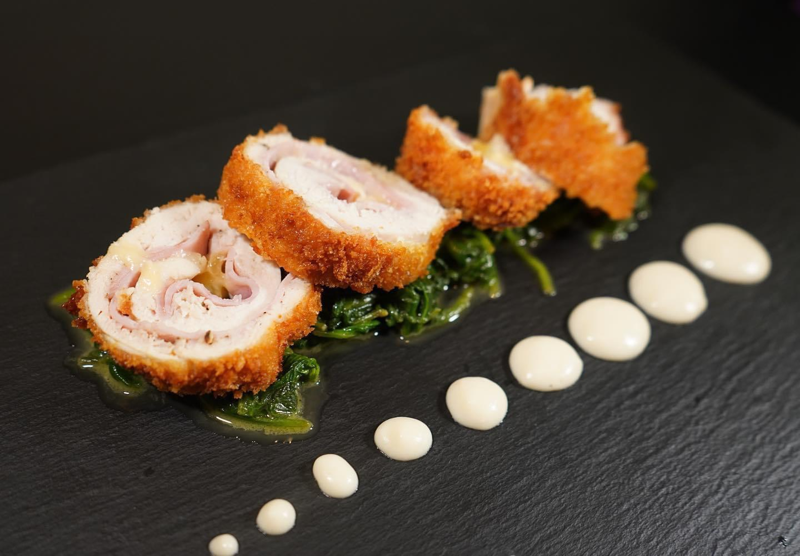

Classic Chicken Cordon Bleu

Let's Talk about the Dish...
This version of classic chicken Cordon Bleu (meaning "blue ribbon") is served with a creamy wine sauce. The term originally referred to an award for culinary excellence. Simply shocking how easy it is to make with just 5 simple steps.
Recipe Details
- Prep
20 mins
- Cook
40 mins
- Total
1 hour
- Servings
6 servings
The Ingredients You'll Need
- 3 tablespoons all-purpose flour
- 1 teaspoon paprika
- 6 skinless, boneless chicken breast halves
- 6 slices Swiss cheese
- 6 slices ham
- 6 tablespoons butter
- ½ cup dry white wine
- 1 teaspoon chicken bouillon granules
- 1 cup heavy whipping cream
- 1 tablespoon cornstarch
Step-By-Step
- Mix flour and paprika together in a shallow bowl.
- Pound chicken breasts to a thickness of 1/4 inch. Place one slice Swiss and one slice ham onto each breast, leaving the outer 1/2 inch uncovered. Roll chicken over filling, dip in flour mixture to coat on all sides, and secure with toothpicks.
- Melt butter in a large skillet over medium-high heat. Add chicken and cook, turning occasionally, until browned on all sides, 5 to 8 minutes. Add wine and bouillon. Reduce the heat to low, cover, and simmer until chicken is no longer pink in the center and the juices run clear, about 30 minutes. An instant-read thermometer inserted into the center should read at least 165 degrees F (74 degrees C).
- Transfer chicken to a warm platter and remove the toothpicks. Whisk cream and cornstarch together in a small bowl; slowly pour into the skillet, whisking constantly to blend with remaining wine mixture. Cook, stirring often, until sauce thickens, 3 to 5 minutes.
- Pour sauce over chicken and serve immediately.
Go Back or Check out our Other Recipes